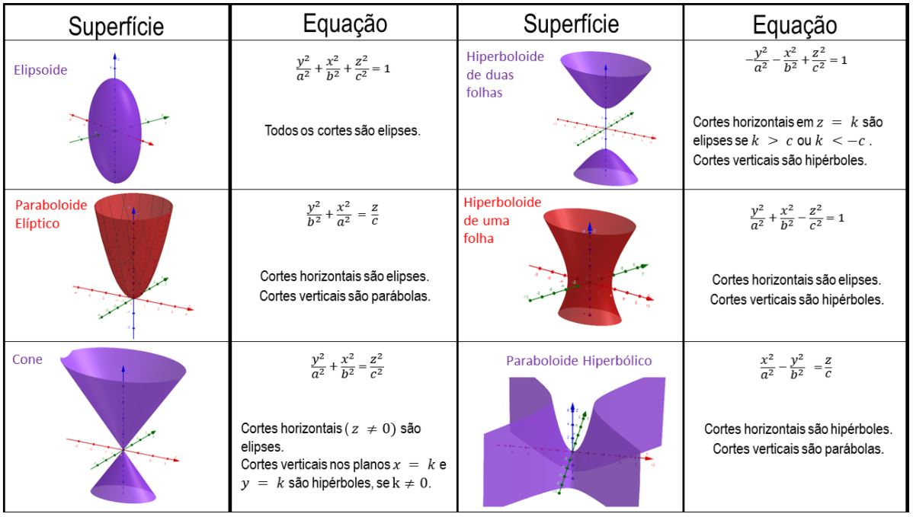
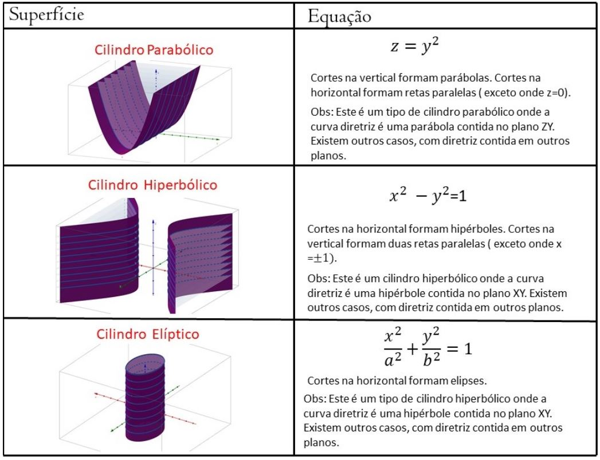
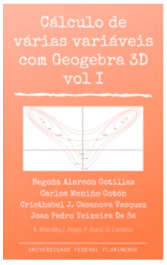

Revisão de Geometria Analítica
Superfícies Quádricas - Atividade
Enquanto estudamos figuras no plano, lidamos com um conjunto de objetos denominados cônicas. Através de seus formatos "peculiares" e
características únicas, buscamos compreender e manipular tais figuras. Assim mesmo, quando entramos no estudo de corpos ou superfícies no espaço,
somos apresentados as superfícies quádricas. A superfície quádrica é uma superfície determinada por uma equação da forma:
$$
A x^{2}+B y^{2}+C z^{2}+D x y+E y z+F x z+G x+H y+I z+J=0
$$
onde $\{A, B, C, \ldots, J\}$ são constantes reais, ao menos um dos termos do conjunto $\{A, B, C, D, E, F\}$ é diferente de zero e $\{x, y, z\}$ são as
variáveis. Estas superfícies são: Elipsóide, Hiperbolóide de uma Folha, Hiperbolóide de duas Folhas, Cone, Parabolóide e Parabolóide Hiperbólico.
Assim como as cônicas se relacionam com gráfico de funções de uma variável real, as superfícies quádricas podem ser relacionadas com gráficos de funções
de duas variáveis reais. Voltaremos neste ponto na seção de gráfico de funções de várias variáveis e na seção do teorema da função implicita.
Apresentamos nas figuras a seguir as superfícies quádricas e cilindros quádricos.


Caderno base da matéria
Acesse o livro abaixo para explorar mais de perto as supérficies quádricas.

Vídeoaulas
- Tutorial 1: Esboço de quádricas no Geogebra 3D
- Tutorial 2: Visualização da curva interseção de quádricas com o Geogebra 3D
- Tutorial 3: Planos e Cones com o Geogebra 3D
-
O termo "traço" ou "corte" refere-se à interseção da superfície com os planos XY, XZ e YZ. Esta é uma forma prática e simples para gerar gráficos
de equaç̃es e avaliar como a função se comporta em relação a cada plano. Os traços são os cortes com o plano $z=k, x=k$ ou $y=k$.
Tutorial 4: Visualização dos traços ou cortes de uma superfície com o Geogebra 3D
Questionário
Esse é um questionário de múltipla escolha. Logo selecione a resposta marcando ao lado. Ao final clique em obter resultado para a correção das respostas enviadas.